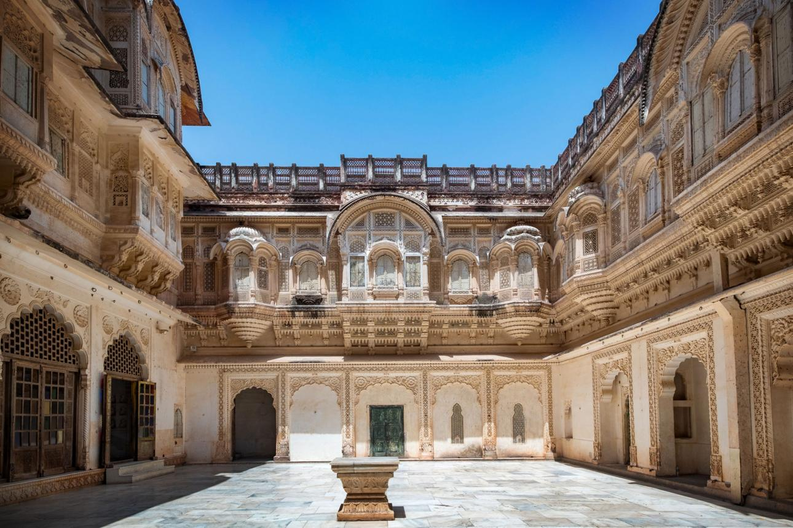

Historical Monuments
Explore India's magnificent monuments, ancient temples, forts, and architectural wonders.
Explore Monuments →DISCOVER INDIA'S HERITAGE
Explore the timeless monuments, vibrant festivals, traditional art, and cultural stories that make India unique.
Explore Heritage →EXPLORE THE BEAUTY OF INDIA
Discover India's extraordinary history, vibrant celebrations, and artistic traditions.
Explore India's magnificent monuments, ancient temples, forts, and architectural wonders.
Explore Monuments →
Experience India's colorful festivals, traditional celebrations, and cultural customs.
Explore Festivals →
Discover traditional paintings, handicrafts, music, dance, and Indian cultural heritage.
Explore Culture →MUST-VISIT PLACES
Discover India's magnificent historical landmarks, architectural wonders, and timeless cultural treasures.

Agra, Uttar Pradesh
A magnificent white marble monument built by Emperor Shah Jahan, symbolising eternal love.
Discover More
Jaipur, Rajasthan
Known as the Palace of Winds, this beautiful structure is famous for its unique windows and Rajput architecture.
Discover More
Amritsar, Punjab
The sacred Harmandir Sahib is renowned for its golden architecture, peaceful atmosphere, and message of equality.
Discover More
Karnataka, India
Explore the remarkable ruins, ancient temples, and stone monuments of the historic Vijayanagara Empire.
Discover MoreCELEBRATIONS & TRADITIONS
Experience the colours, traditions, and celebrations that bring India's diverse cultures together.

Celebrate the victory of light over darkness with beautiful diyas, decorations, sweets, and family gatherings.
Explore Festival
Welcome spring with vibrant colours, music, traditional sweets, and joyful celebrations across communities.
Explore Festival
Celebrate Punjab's harvest season with traditional music, energetic bhangra, and vibrant cultural gatherings.
Explore Festival
Experience the grand celebration of Goddess Durga through artistic pandals, rituals, cultural performances, and festivities.
Explore FestivalTRADITIONS & CREATIVITY
Discover the artistic expressions, traditional skills, and cultural practices that make India's heritage unique.

Explore India's classical dance forms, including Bharatanatyam, Kathak, Odissi, and Kathakali.
Explore More
Discover beautiful Indian art styles such as Madhubani, Warli, Pattachitra, and Phad painting.
Explore More
Learn about India's traditional pottery, textiles, embroidery, woodwork, and handmade crafts.
Explore More
Experience India's musical traditions through instruments such as the sitar, tabla, and bansuri.
Explore MoreDISCOVER SOMETHING NEW
Explore fascinating facts about India's history, architecture, and cultural heritage.
The Sun Temple in Odisha is designed as a giant stone chariot with 24 intricately carved wheels. Its architecture reflects the movement of time.
ARCHITECTURELocated in Gujarat, this magnificent stepwell features seven levels of stairs and beautifully carved sculptures.
HISTORICAL HERITAGEHampi was once the capital of the powerful Vijayanagara Empire and is now recognised as a UNESCO World Heritage Site.
ANCIENT HISTORYIndia's traditional crafts include pottery, weaving, embroidery, wood carving, and many other regional art forms.
ART & CULTUREOUR STORY & PURPOSE
India is home to a remarkable heritage shaped by centuries of history, art, architecture, and traditions. Every monument, festival, and art form tells a unique story about our past.
Heritage & Culture is a platform dedicated to exploring these cultural treasures and sharing the fascinating stories that make India's identity so special.
Discover Our Story